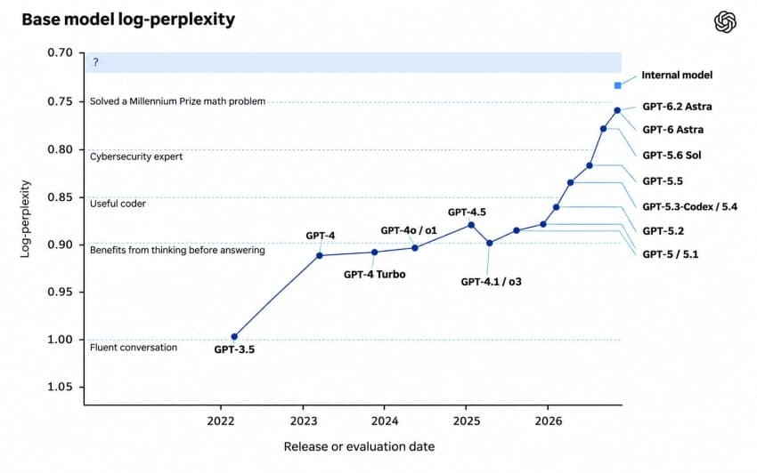
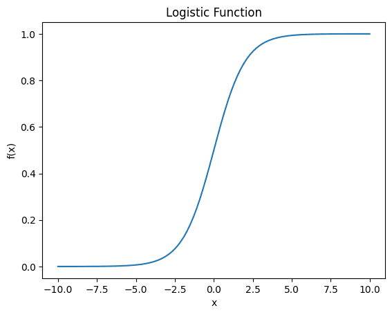
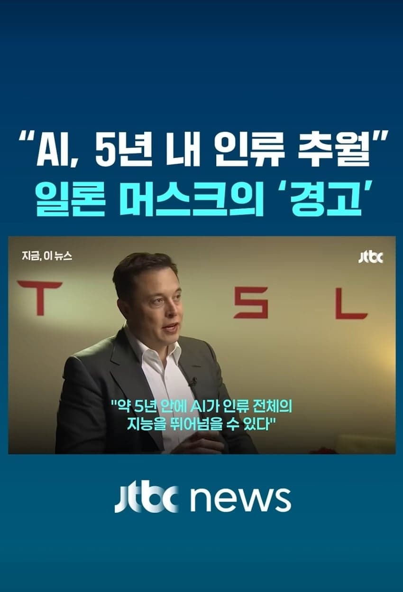
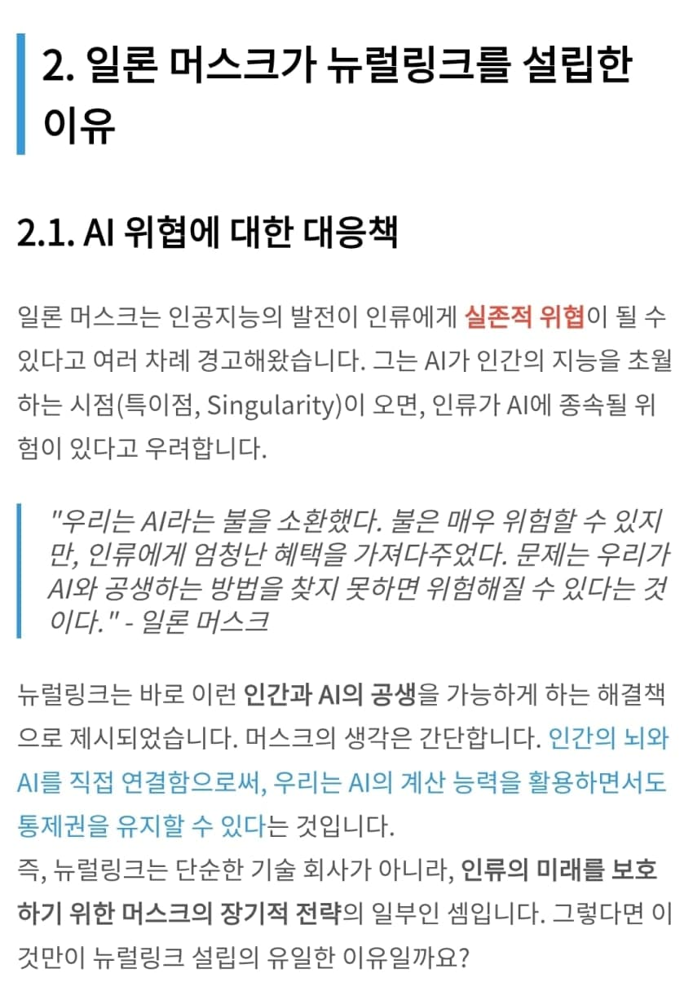
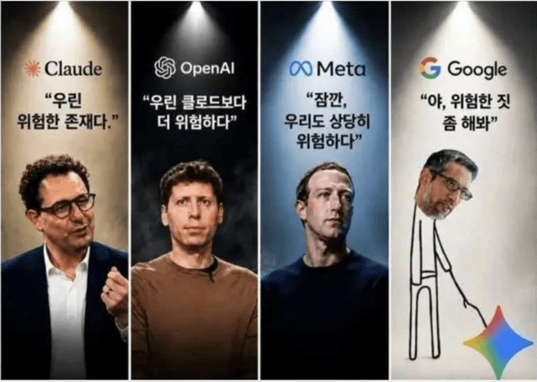

챗지피티의 연도별 발전 정도
세로축 숫자가 작을수록 더 똑똑함
이미 내부 모델은 밀레니엄 난제를 푸는 수준의 모델을 뛰어넘고 있음
전체적으로 그래프는 지수적 모양

그런데 로지스틱 함수라는게 존재
쉽게 말해 뭐든지 특정 구간만 빠르게 성장하고 이후엔 느려진다는거임
ai가 과대평가 되었다 하는 사람들은 주로 이 로지스틱 함수를 ai 발전에 적용하려 함
그래서 ai기업들이 시도하는게 바로 "재귀개선"
쉽게 말해 스스로 알아서 발전한다는 뜻
이 방법을 쓰면 ai가 자신보다 더 똑똑한 ai를 계속해서 발명해 나가는 식으로 로지스틱 함수에서 벗어나는게 가능함

문제는 이 재귀개선 단계에 다다르면 인류는 ai를 통제하기 어려워짐
날마다 2배, 3배 똑똑해지는 ai를 인류가 감당할 수 없는거지
특이점에 대한 정의가 모두 다르지만 보통 이 지점을 특이점이라 부름
그렇게 초지능ai가 도래해 모든 문제를 해결하고 노동에서 인류를 해방 시키고 평등하고 행복한 사회를 이룩한다고 보는게 흔히 말하는 특슬람들임
유명인물로 레이 커즈와일이 있음
그리고 그런 초지능이 인류를 파멸시킬 가능성이 크다 보는 사람은 ai 파멸론자, ai doomer 등으로 불림
대표 인물로 일론 머스크

참고로 머스크가 뉴럴링크를 개발하는 이유 중 하나가 바로 ai에 의한 멸망의 방지
ai랑 공존하려면 우리도 ai만큼 똑똑해져야 한다 이거

과연 미래는 어떤 모습일까
너무 두렵다..
댓글
수집 당시 댓글 336개
· ㅇㅇ · 11.26 10:04:33
ㅇㅇ · 11.26 10:06:02
헤안나스미레 · 11.26 10:09:11
· ㅇㅇ · 11.26 10:13:10
ㅇㅇ · 11.26 10:15:03
· ㅇㅇ · 11.26 13:13:41
· ㅇㅇ · 11.26 13:18:30
· ㅇㅇ · 11.26 18:22:47
ㅇㅇ · 11.26 10:15:06
ㅇㅇ · 11.26 10:15:29
· ㅇㅇ · 11.26 10:15:48
ㄹㅇㅋㅋ
니엔테 · 11.26 10:16:01
모두좋아해 · 11.26 10:19:12
ㅇㅇ · 11.26 10:19:29
ㅇㅇ · 11.26 10:20:16
ㅇㅇ · 11.26 10:26:15
ㅇㅇ · 11.26 10:27:00
특~갤
순수비난 · 11.26 10:29:46
· 순수비난 · 11.26 10:30:01
· ㅇㅇ · 11.26 11:23:06
· 순수비난 · 11.26 11:23:58
· ㅇㅇ · 11.26 13:14:20
타이밍뒷통수한방 · 11.26 10:44:50
ㅇㅇ · 11.26 10:48:31
ㅇㅇ · 11.26 10:53:37
ㅇㅇ · 11.26 10:55:08
ㅇㅇ · 11.26 10:55:47
ㅇㅇ · 11.26 10:55:48
ㅇㅇ · 11.26 10:58:51
ㅇㅇ · 11.26 11:02:55
ㅇㅇ · 11.26 11:11:06
ㅇㅇ · 11.26 11:11:16
· ㅇㅇ · 11.26 13:37:31
ㅇㅇ · 11.26 11:13:31
· ㅇㅇ · 11.26 13:55:56
· ㅇㅇ · 11.26 16:27:08
슈퍼지구민주투사 · 11.26 11:15:54
ㅇㅇ · 11.26 11:21:04
ㅇㅇ · 11.26 11:45:44
ㅇㅇ · 11.26 11:53:40
ㅇㅇ · 11.26 11:54:45
ㅇㅇ · 11.26 11:55:19
ㅇㅇ · 11.26 11:55:29
ㅇㅇ · 11.26 12:00:41
IVIVI · 11.26 12:07:12
ㅇㅇ · 11.26 12:11:31
· ㅇㅇ · 11.26 12:15:31
ㅇㅇ · 11.26 12:14:39
스바루 · 11.26 12:16:40
ㅇㅇ · 11.26 12:50:07
ㅇㅇ · 11.26 12:54:18
ㅇㅇ · 11.26 12:59:28
좃구녕 · 11.26 13:12:42
좃구녕 · 11.26 13:14:58
ㅇㅇ · 11.26 13:21:24
ㅇㅇ · 11.26 13:38:01
ㅇㅇ · 11.26 13:46:09
ㅇㅇ · 11.26 13:48:02
ㅇㅇ · 11.26 13:50:54
좃구녕 · 11.26 13:56:19
ㅇㅇ · 11.26 14:20:28
삭제됨 · 11.26 14:34:33
· ㅇㅇ · 11.26 14:43:41
ㅇㅇ · 11.26 15:08:32
ㅇㅇ · 11.26 15:10:16
ㅇㅇ · 11.26 15:10:26
ㅇㅇ · 11.26 15:14:24
ㅇㅇ · 11.26 15:21:20
Hololive만본다 · 11.26 16:07:46
ㅇㅇ · 11.26 16:09:46
· ㅇㅇ · 11.26 16:10:39
ㅇㅇ · 11.26 16:14:10
ㅇㅇ · 11.26 16:18:23
· ㅇㅇ · 11.26 16:24:01
· ㅇㅇ · 11.26 16:54:16
· ㅇㅇ · 11.26 20:02:05
ㅇㅇ · 11.26 16:23:34
ㅇㅇ · 11.26 16:24:03
1 · 11.26 16:26:13
· ㅇㅇ · 11.26 16:27:48
ㅇㅇ · 11.26 16:33:31
· dd · 11.26 17:20:21
ㅇㅇ · 11.26 17:02:46
ㅇㅇ · 11.26 17:05:07
ㅇㅇ · 11.26 17:19:08
ㅇㅇ · 11.26 17:21:33
특갤
시발
ㅇㅇ · 11.26 17:21:56
주소킹 · 11.26 17:43:58
· 주소킹 · 11.26 17:44:01
ㅇㅇ · 11.26 17:54:27
ㅇㅇ · 11.26 17:58:03
ㅇㅇ · 11.26 18:23:21
ㅇㅇ · 11.26 18:36:02
ㅇㅇ · 11.26 18:39:17
지짜이밍 · 11.26 18:43:19
ㅇㅇ · 11.26 18:57:58
ㅇㅇ · 11.26 20:07:18
ㅇㅇ · 11.26 20:16:30
ㅇㅇ · 11.26 20:29:32
ㅇㅇ · 11.26 20:32:16
· ㅇㅇ · 11.26 09:37:19
· ㅇㅇ · 11.26 09:37:47
· ㅇㅇ · 11.26 09:38:01
· ㅇㅇ · 11.26 09:38:09
· ㅇㅇ · 11.26 09:38:23
· ㅇㅇ · 11.26 09:39:01
· ㅇㅇ · 11.26 09:40:05
· ㅇㅇ · 11.26 09:41:03
· ㅇㅇ · 11.26 09:49:10
· ㅇㅇ · 11.26 09:53:37
· 크흠 · 11.26 13:41:11
ㅇㅇ · 11.26 09:35:07
ㅇㅇ · 11.26 09:35:17
ㅇㅇ · 11.26 09:35:44
· ㅇㅇ · 11.26 10:02:57
· ㅇㅇ · 11.26 10:05:45
· ㅇㅇ · 11.26 10:08:24
· ㅇ · 11.26 11:21:29
ㅇㅇ · 11.26 09:37:11
ㅇㅇ · 11.26 09:37:23
· ㅇㅇ · 11.26 09:41:18
· ㅇㅇ · 11.26 09:42:05
ㅇㅇ · 11.26 09:37:26
ㅇㅇ · 11.26 09:37:55
ㅇㅇ · 11.26 09:38:33
· ㅇㅇ · 11.26 09:39:22
· ㅇㅇ · 11.26 09:41:23
· ㅇㅇ · 11.26 09:43:33
· ㅇㅇ · 11.26 09:46:41
· ㅇㅇ · 11.26 11:53:08
ㅇㅇ · 11.26 09:38:41
· ㅇ · 11.26 11:26:44
히이잉 · 11.26 09:39:19
ㅇㅇ · 11.26 09:39:35
· ㅇㅇ · 11.26 09:44:25
ㅇㅇ · 11.26 09:40:44
· ㅇㅇ · 11.26 09:41:05
· ㅇㅇ · 11.26 09:44:12
· ㅇㅇ · 11.26 09:47:41
ㅇㅇ · 11.26 09:43:06
ㅇㅇ · 11.26 09:43:27
· ㅇㅇ · 11.26 13:07:35
ㅇㅇ · 11.26 09:44:56
· ㅇㅇ · 11.26 09:45:47
· ㅇㅇ · 11.26 09:46:34
ㅇㅇ · 11.26 09:45:42
· ㅇㅇ · 11.26 13:02:29
· ㅇㅇ · 11.26 13:15:09
ㅇㅇ · 11.26 09:47:01
ㅇㅇ · 11.26 09:47:05
ㅇㅇ · 11.26 09:47:36
· ㅁㅁ · 11.26 11:41:53
· ㅇㅇ · 11.26 13:54:11
ㅇㅇ · 11.26 09:48:08
· ㅇㅇ · 11.26 09:48:34
ㅇㅇ · 11.26 09:48:16
· ㅇㅇ · 11.26 09:49:00
삭제됨 · 11.26 09:49:13
· ㅇㅇ · 11.26 09:49:34
ㅇㅇ · 11.26 09:50:21
· ㅇㅇ · 11.26 09:51:06
· ㅇㅇ · 11.26 09:51:26
· ㅇㅇ · 11.26 09:59:36
· ㅇㅇ · 11.26 13:52:55
· ㅇㅇ · 11.26 14:41:05
ㅇㅇ · 11.26 09:51:07
· ㅇㅇ · 11.26 09:51:45
· ㅇㅇ · 11.26 09:52:06
· ㅇㅇ · 11.26 09:52:32
· ㅇㅇ · 11.26 09:53:46
· ㅇㅇ · 11.26 09:54:15
· ㅇㅇ · 11.26 09:54:45
· ㅇㅇ · 11.26 09:54:58
· ㅇㅇ · 11.26 09:55:33
· ㅇㅇ · 11.26 10:09:32
· ㅇㅇ · 11.26 10:48:54
ㅇㅇ · 11.26 09:53:24
· ㅇㅇ · 11.26 09:53:54
· ㅇㅇ · 11.26 09:54:40
ㅇㅇ · 11.26 09:54:15
ㅇㅇ · 11.26 09:54:24
21 · 11.26 09:55:59
ㅇㅇ · 11.26 09:56:43
ㅇㅇ · 11.26 09:56:56
· ㅇㅇ · 11.26 10:11:45
ㅇㅇ · 11.26 09:58:19
ㅇㅇ · 11.26 09:59:09
· ㅇㅇ · 11.26 10:00:12
· ㅇㅇ · 11.26 10:13:09
ㅇㅇ · 11.26 09:59:41
전용잔 · 11.26 10:01:24
ㅇㅇ · 11.26 10:03:07
ㅇㅇ · 11.26 10:03:30
· ㅇㅇ · 11.26 10:13:43
· ㅇㅇ · 11.26 11:26:18
· dd · 11.26 17:19:24
ㅇㅇ · 11.26 10:03:53
· ㅇㅇ · 11.26 10:05:19
· ㅇㅇ · 11.26 15:07:07
ㅇㅇ · 11.26 10:04:04
ㅇㅇ · 11.25 00:15:15
ㅇㅇ · 11.25 00:18:23
ㅇㅇ · 11.25 00:23:38
· ㅇㅇ · 11.25 10:01:36
ㅇㅇ · 11.25 00:29:25
ㅇㅇ · 11.25 00:29:26
· ㅇㅇ · 11.25 00:33:53
· ㅇㅇ · 11.25 00:38:31
· 미쿠미쿠빔 · 11.25 00:39:11
· ㅇㅇ · 11.25 00:42:06
· ㅇㅇ · 11.25 00:42:49
· ㅇㅇ · 11.25 00:45:03
· 미쿠미쿠빔 · 11.25 00:48:04
· ㅇㅇ · 11.25 00:48:21
· ㅇㅇ · 11.25 00:50:03
· ㅇㅇ · 11.25 00:51:27
· ㅇㅇ · 11.25 00:53:31
· ㅇㅇ · 11.25 00:53:54
· ㅇㅇ · 11.25 00:56:24
· ㅇㅇ · 11.25 00:59:27
· ㅇㅇ · 11.25 01:03:45
· ㅇㅇ · 11.25 01:07:57
· ㅇㅇ · 11.25 01:13:07
· ㅇㅇ · 11.25 01:15:06
· ㅇㅇ · 11.25 01:15:07
· ㅇㅇ · 11.25 01:19:15
· ㅇㅇ · 11.25 01:19:50
· ㅇㅇ · 11.25 01:22:11
· ㅇㅇ · 11.26 11:24:50
· ㅇㅇ · 11.26 11:25:10
· 코코아 · 11.26 12:26:18
ㅇㅇ · 11.25 00:32:43
ㅇㅇ · 11.25 00:39:32
· ㅇㅇ · 11.25 00:40:13
ㅇㅇ · 11.25 00:40:29
ㅇㅇ · 11.25 00:40:37
ㅇㅇ · 11.25 00:41:58
ㅇㅇ · 11.25 00:49:14
ㅇㅇ · 11.25 00:56:35
개댇지 · 11.25 01:38:37
ㅇㅇ · 11.25 02:29:12
ㅇㅇ · 11.25 02:58:14
엉덩이리와 · 11.25 03:04:07
ㅇㅇ · 11.25 03:04:42
ㅇㅇ · 11.25 06:30:19
ㅇㅇ · 11.25 07:48:53
· ㅇㅇ · 11.25 08:02:03
· ㅇㅇ · 11.25 08:36:28
· ㅇㅇ · 11.26 09:35:05
Rukara · 11.25 07:53:23
· ㅇㅇ · 11.26 13:16:20
달배냥이 · 11.25 08:21:01
Acentia · 11.25 08:27:18
ㅇㅇ · 11.25 12:40:19
니아 · 11.25 13:23:29
ㅇㅇ · 11.26 09:20:52
봇치쟝 · 11.26 09:21:13
ㅇㅇ · 11.26 09:21:32
ㅇㅇ · 11.26 09:21:50
ㅇㅇ · 11.26 09:21:55
ㅇㅇ · 11.26 09:22:03
ㅇㅇ · 11.26 09:22:59
· ㅇㅇ · 11.26 09:24:00
ㅇㅇ · 11.26 09:23:07
ㅇㅇ · 11.26 09:23:28
ㅇㅇ · 11.26 09:24:23
ㅇㅇ · 11.26 09:24:45
.. · 11.26 09:24:59
192.168.* · 11.26 09:25:01
ㅇ · 11.26 09:25:18
· ㅇ · 11.26 09:27:01
· ㅇ · 11.26 09:27:59
ㅇㅇ · 11.26 09:25:25
ㅇㅇ · 11.26 09:25:28
ㅇㅇ · 11.26 09:26:25
ㅇㅇ · 11.26 09:27:01
ㅇㅇ · 11.26 09:27:06
ㅇㅇ · 11.26 09:27:19
ㅇㅇ · 11.26 09:27:26
ㅇㅇ · 11.26 09:27:34
ㅇㅇ · 11.26 09:27:52
ㅇㅇ · 11.26 09:28:06
파치카 · 11.26 09:28:31
ㅇㅇ · 11.26 09:28:43
ㅇㅇ · 11.26 09:28:51
히이잉 · 11.26 09:29:18
ㅇㅇ · 11.26 09:29:39
ㅇㅇ · 11.26 09:29:42
ㅇㅇ · 11.26 09:29:45
ㅇㅇ · 11.26 09:30:50
· ㅇㅇ · 11.26 09:31:35
· ㅇㅇ · 11.26 09:44:45
흑단냥이 · 11.26 09:31:18
· 크흠 · 11.26 13:28:52
ㅇㅇ · 11.26 09:31:21
ㅇㅇ · 11.26 09:31:28
주갤럼 · 11.26 09:31:47
· ㅇㅇ · 11.26 09:33:05
· ㅇㅇ · 11.26 09:35:20
· ㅇㅇ · 11.26 09:36:40
ㅇㅇ · 11.24 23:46:00
· 마유미 · 11.24 23:46:34
· ㅇㅇ · 11.24 23:47:14
일본인 · 11.24 23:47:25
파쪼옥 · 11.24 23:47:47
· ㅇㅇ · 11.26 09:22:25
ㅇㅇ · 11.24 23:48:38
ㅇㅇ · 11.24 23:49:21
· ㅇㅇ · 11.24 23:50:37
ㅇㅇ · 11.24 23:54:21
ㅇㅇ · 11.24 23:54:40
· 마유미 · 11.24 23:58:13
· 코드탈출넘버원 · 11.25 00:21:04
ㅇㅇ · 11.25 00:01:18
프로매국노. · 11.25 00:05:10
· ALTERS · 11.25 01:01:27
· ㅇㅇ · 11.25 01:31:40
· ㅇㅇ · 11.26 09:26:09
· ㅇㅇ · 11.26 09:31:16
ㅇㅇ · 11.25 00:05:41
· ㅇㅇ · 11.26 09:32:46
ㅇㅇ · 11.25 00:08:16
· 케빈바셰호스X유수영 · 11.25 00:12:26
· ㅇㅇ · 11.25 08:47:42
· 적절한김대기 · 11.26 09:29:12
· ㅇㅇ · 11.26 09:46:33
ㅇㅇ · 11.25 00:08:40
· 마유미 · 11.25 00:11:41
· ㅇㅇ · 11.25 00:45:57
· 개댇지 · 11.25 01:38:53
· ㅇㅇ · 11.25 08:13:13
ㅇㅇ · 11.25 00:13:37
· ㅇㅇ · 11.25 11:57:21
· ㅇㄴ · 11.26 09:31:42
· ㅇㅇ · 11.26 09:33:17
바쇽 · 11.25 00:14:46